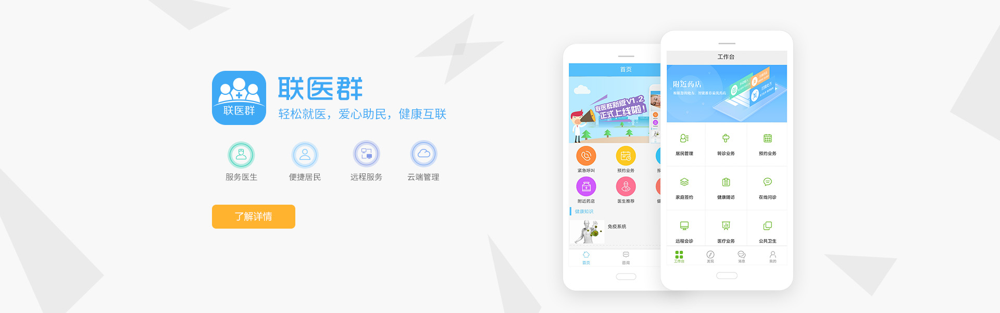

区域医联体健康平台已在鹤壁淇县人民医院投入使用， 覆盖淇县人民医院县域医院及下级五到六个乡镇医院， 使用3个月以来共计转诊数量达百十例；目前，试用 范围正在扩大。
区域医联体健康平台（医生）为县域医院及乡 镇卫生院村医院提供软件服务；区域医联体健康平台 （卫计委）为卫计委提供报表服务；联医群APP 为医生和居民提供方便高效的管理及沟通服务。

平台采用DICOM格式，可实现APP、PC多平台阅片 ；低带宽远程会诊，压缩数据包；使用电子就诊卡 预约、支付、查看报告；采用OCR技术，可实现文件 转换，病历文件在线保存。